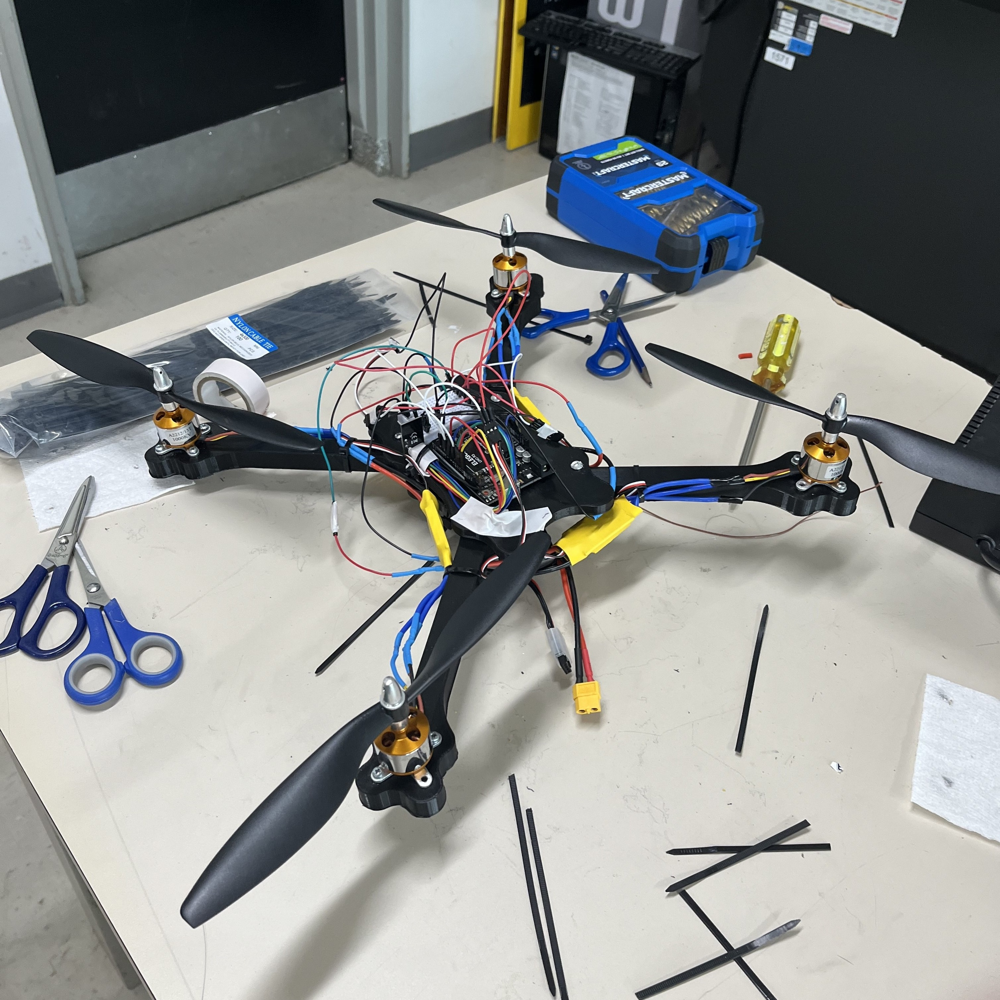

This website is a self-built portfolio designed with pure HTML/CSS, and uses Javascript and the JQuery library for transitions and interactive elements. It was designed to showcases my projects, skills, and personal development as a software developer thus far, as well as act as a practical application of "barebones" web development that doesn't rely on templates or frameworks.
Designing this site taught me the fundamentals of front-end web development, including HTML structures, styling, responsive design, and DOM manipulation. It sparked a strong interest in web development for me, and I plan to expanding my skillset by learning tools like React, Tailwind CSS, and Next.js with future projects.
Front-End
Javascript
HTML
CSS
JQuery
Web-Dev
VS Code
Software
Delivery Guard is a smart, anti-theft device designed to prevent porch piracy. It was programmed in C with STM32CubeIDE, and uses 3 STM32 microcontrollers to control an electromagnet that locks the box, along with controlling the button input, ultrasonic sensor, and system status. When powered, it remains locked until the button is pressed, triggering a motor to open the lid and reset the system and ensuring safe storage until the package is retrieved by its owner.
This project was a great opportunity for me to further design embedded systems in a real-world context and helped me significantly improve my technical documentation skills. Overall, it stands out to me as one of the most complete and well-rounded projects I've contributed to, blending teamwork, C programming, and problem-solving into a cohesive, functional prototype.
IoT
STM32
C
Fusion
AutoCAD
Git
Hardware

This drone was my first Internet of Things (IoT) project and was designed with my friend Saahil to take aerial photos of my high school. Built around a quadcopter frame powered with an Arduino microcontroller, it uses four brushless DC motors that are controlled by ESCs and is powered by a 9V battery unit. The drone's frame was designed in Fusion 360 and uses lightweight, 3D materials.
This project was a great deep dive into real-time systems and embedded programming for me, and it acted nicely as a real-world application of the reality of working with timelines on a limited budget. It also pushed me to improve my technical documentation, with the resulting structure being much more organized than some of my previous projects.
IoT
Arduino
C++
Fusion
AutoCAD
Soldering
Hardware

Peggle is a 2D game developed in C# using Visual Studio 2022 that was inspired by the original 2007 game of the same title. The game features a custom, 2D phyiscs engine created entirely without the use of any external libraries, handling motion, dynamic collisions, and gravity.
The collision algorithm was created using derivative logic, running continuously within the game loop. I also made use of object-oriented programming for the pegs, the ball, and keeping track of the score. This was by far the most technically challenging game I've worked on, as it required recreating physical forces in a simplified, 2D environment. Despite the difficulty, it pushed me to consider how these forces could be realistically approximated, and I'm quite happy with the result.
C#
VS 2022
Physics Sim
OOP
Game-Dev
Git
Software
The Witness is a short puzzle game inspired by the line-drawing mechanic found in the game with the same title. I developed it in C# using Visual Studio 2022, wanting to challenge myself with a mouse-based system where the player can "free-roam" within the grid boundries.
The game features 12 original, handmade levels with increasing complexity and is played on a class-based grid-layout that leans heavily on object-orientated programming. The focus on modular level design and progression systems helped refine my approach to structuring logic-heavy games, and it remains one of my most rewarding solo builds due to its combination of technical depth and creative problem-solving.
C#
VS 2022
OOP
Game-Dev
Cursor Logic
Git
Software
This Brick Breaker recreation was a collaborative project developed in C# by a team of eight using Visual Studio 2022. I took on the role of repository lead, managing the main GitHub codebase, reviewing pull requests, resolving merge conflicts, and keeping version control organized.
Coordinating a team of this size presented challenges, particularily in aligning coding and individual styles. As such, the final product is probably the least polished of the games I've developed, though it gave me valuable experience in technical leadership and a lot of great insight into managing a codebase with a number of members.
C#
VS 2022
OOP
Game-Dev
Team-Based
Github
Software

Junimo Kart is a 2D platformer game developed in C# using Visual Studio 2022, built in mid 2023. Inspired by the 2D platformer of the same name in Stardew Valley, this was my first major game development, laying out my foundation for 2D game architecture.
The game features a basic physics engine, with gravity, jumping, and dashing mechanics in an arcade-styled movement. It also features procedural terrain creation (the platforms that appear), increasing in difficulty as the player progresses. Overall, as an intro to game developement, Junimo Kart taught me a lot about object-orientated programming, procederal generation, and C#.
C#
VS 2022
OOP
Game-Dev
Physics Sim
ProcGen
Software